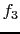
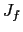

In order to calculate first derivatives execute the following sequence of calls.
x0[0] = 1; x0[1] = 5; x0[2] = 5; std::vector<double> vlambda(3); vlambda[0] = 0; vlambda[1] = 0; vlambda[2] = 1; osinstance->forwardAD(0, x0); osinstance->reverseAD(1, vlambda);Since vlambda only includes the third function , this sequence of calls will produce the third row of the Jacobian , i.e